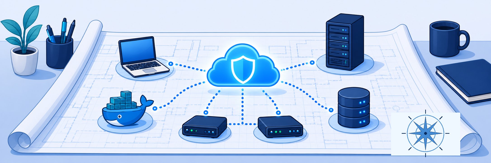

Lab 0: Lab Orientation & Environment Overview
Scenario: Your organisation, Labtenant, has deployed the Zscaler Zero Trust Exchange to protect against internet threats, control internet access, and provide secure access to private resources. It is also focused on end-user experience, using the Zero Trust Exchange to monitor and report on performance, and it wants to give select third parties secure access to private resources without client software or VPNs. As an IT Engineer, you perform advanced configuration of platform services, security services, data protection, and management/logging services, building on an environment that is already passing traffic securely.

Read through the lab overview so you understand the context behind every configuration task you'll perform.
About this Lab
Welcome to the Zscaler for Users – Engineer (EDU-202) hands-on lab. You apply the skills you learned in eLearning by working in the Zscaler remote lab environment, completing exercises that build proficiency in:
- Configuring connectivity to the Zero Trust Exchange
- Defining allow and deny policies for access through the Zero Trust Exchange
- Using the administration interfaces to analyse traffic patterns
To Continue the Rollout, You Will
- Sign in to the Experience Center console landing page and get familiar with its functions
- Configure Browser Access for third parties
- Configure Log Streaming
- Configure Privileged Remote Access
- Configure AppProtection in Zscaler Private Access
- Build Zero Trust Browser Isolation in Zscaler Private Access
- Configure Cloud Application Monitoring
- Configure alerts and initiate a Diagnostics session in Zscaler Digital Experience
- Automate tasks with Zscaler OneAPI
- Analyse data and view integrated reports and snapshots (Solutions Demo Center)
- Understand incidents with Zscaler Workflow Automation (Solutions Demo Center)
Lab Setup
You have access to the Zero Trust Exchange services — Zscaler Internet Access (ZIA), Zscaler Private Access (ZPA), and Zscaler Digital Experience (ZDX) — plus an account for the Zscaler Authentication service (formerly ZIdentity) and a CloudShare environment. You configure the ZIA, ZPA, and ZDX services and a Zscaler Service Portal (formerly ZIdentity) environment, and you use Windows and Linux client VMs in CloudShare to connect to the Zero Trust Exchange and to test access and user experience.
Your CloudShare environment contains six virtual machines. Each VM plays a specific role across the labs. Study the topology so you always know which machine to use for each task.

Corporate Data Center VMs (10.0.0.0/24)
- Corp Win Svr 2025 (Windows Server) — Provides local directory services through Active Directory and hosts the
patraining.safemarch.comdomain. It runs HTTP/HTTPS intranet applications and file-sharing services, acts as the DNS server for data center hosts, and runs Microsoft Certificate Server to issue certificates for Browser Access. Username:Administrator· Password:Admin-123!· IP:10.0.0.1 - Corp Docker Server (Linux Server) — Hosts the HVAC application, a vulnerable web app (DVWA), and a syslog server that simulates a SIEM for log streaming. Username:
zscaler· Password:Zscaler123!· IP:10.0.0.2 - Corp ZPA Connector and Corp Log Streaming Connector (App Connectors) — Red Hat Enterprise Linux (RHEL) VMs that simulate deploying an OVA/OVF and installing the App Connector RPM. The initial lab setup provisions these connectors for the ZPA service. Username:
admin· Password:Zscaler1!· IPs:10.0.0.3and10.0.0.20
Remote Public Network VMs (192.168.1.0/24)
- Corp Client PC 1 (Windows Client PC) — The primary Windows workstation you use for most lab tasks. Username:
Student· Password:Admin-123!· IP:192.168.1.1 - Remote Linux Client PC — A Linux client used to test access from a non-corporate endpoint, such as a third-party contractor. Username:
admin· Password:Admin-123!· IP:192.168.1.2
Keep this page open as a credentials reference throughout the labs. The Session Password for your Zscaler admin and user accounts is unique to your pod. Save it with your Student FQDN in the ⚙ Lab Configuration panel on the EDU-202 hub so it appears inline wherever needed.
Virtual Machine Credentials
| VM Name | Username | Password | IP Address |
|---|---|---|---|
| Corp Win Svr 2025 | administrator | Admin-123! | 10.0.0.1 |
| Corp Client PC 1 | student | Admin-123! | 192.168.1.1 |
| Corp Docker Server | zscaler | Zscaler123! | 10.0.0.2 |
| Corp ZPA Connector | admin | Zscaler1! | 10.0.0.3 |
| Corp Log Streaming Connector | admin | Zscaler1! | 10.0.0.20 |
| Remote Linux Client PC | admin | Admin-123! | 192.168.1.2 |
Zscaler Portal Credentials
| Account | Username | Password | Used In |
|---|---|---|---|
| Student Admin | student@<Student FQDN> | <Session Password> | Your dedicated tenant (Experience Center) |
| HVAC User | hvac@<Student FQDN> | Admin-123! | Lab 2, Task 2.4 — Browser Access test |
| SDC Admin (read-only) | CloudShare Credentials tab › SDC Credentials | SDC password (same tab) | Solutions Demo Center labs |
| SDC IT Department user | IT Username (same tab) | SDC password (same tab) | Workflow Automation lab — Client Connector enrollment |
Note: Throughout the lab guide, <Student FQDN> refers to the domain assigned to your pod (for example, zs000834.labtenant.com). Save your FQDN on the hub's Lab Configuration panel and every placeholder updates automatically.
Dedicated Lab Tenant Access
Each student is assigned a unique Student ID with a dedicated virtual environment hosted in CloudShare, and a corresponding Student FQDN with a set of admin and test user accounts for Zscaler. User credentials and portal addresses are in the lab access instructions for your training pod:
- Student ID — a unique identifier for your pod (for example,
zs000834) - Student FQDN — a unique domain for your pod (for example,
zs000834.labtenant.com) - Login name format:
student@<Student FQDN>(for example,student@zs000834.labtenant.com) - Session Password — unique to your session, and the same across all configured admin and user accounts in your pod
You can also find your tenant and SDC credentials on the Credentials tab of your CloudShare environment (see Lab 1).
Note: Save your Student FQDN and Session Password in the ⚙ Lab Configuration panel on the EDU-202 hub. All credential placeholders on the lab pages update automatically.
Solutions Demo Center (SDC) Access
For some tasks, you switch to the Solutions Demo Center tenant, where activity data is available for analysis. You have a read-only administrator account on the SDC tenant, and its credentials are on the CloudShare Credentials tab. Tasks that need the SDC account tell you to sign in to it.
- Sign in to the SDC Admin Portal (read-only admin):
- Open a new browser window and go to
console.zscaler.com. - Sign in with the SDC credentials provided to you.
- Open a new browser window and go to
Note: The SDC tenant is hosted in the zscalerthree.net cloud. Use the Admin Portal URL console.zscaler.com. If you prefer, use your local workstation browser to reach it.